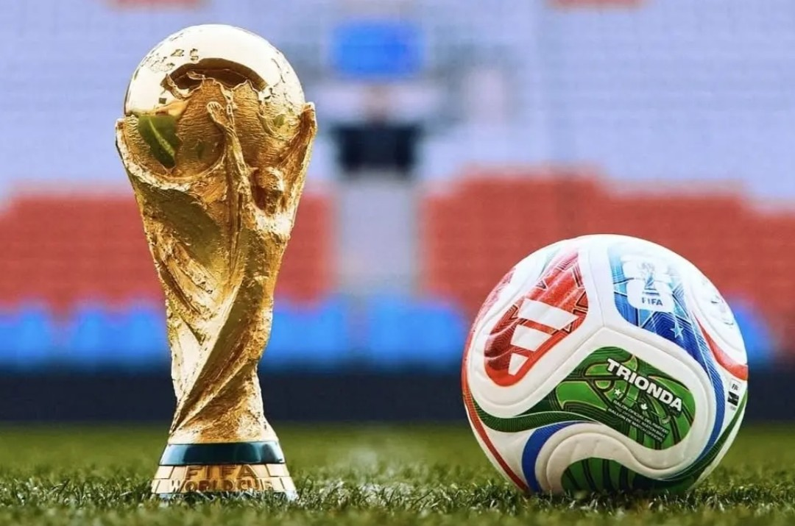
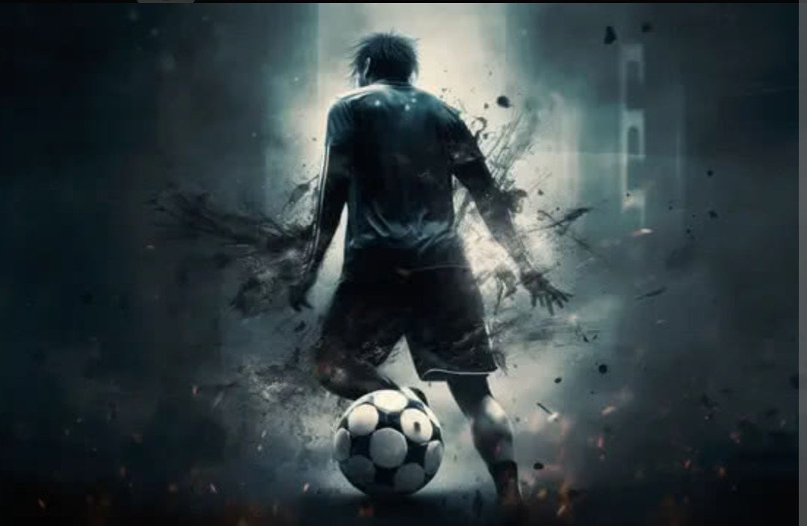

Bienvenido a la Historia del Fútbol
El fútbol es el deporte más popular del mundo. Conocido como "El deporte rey", ha unido a naciones, creado leyendas y llenado estadios durante más de un siglo. Descubre cómo comenzó todo.
¿Dónde y cuándo nació?

Aunque existen registros de juegos con pelota en civilizaciones antiguas (como en China o Mesoamérica), el fútbol moderno tal como lo conocemos nació en Inglaterra, en el siglo XIX.
En 1863 se fundó la "Football Association" (FA), la primera asociación de fútbol del mundo, donde se escribieron las primeras reglas oficiales para diferenciarlo del rugby.
Su Evolución

El deporte se expandió rápidamente por Europa y luego al resto del mundo. En 1904 se creó la FIFA (Fédération Internationale de Football Association) para gobernar el deporte a nivel mundial.
1930
Se juega la primera Copa del Mundo en Uruguay.
1950
El famoso "Maracanazo" y la expansión mundial.
1992
Nace la Champions League moderna.
El fútbol hoy en día
Hoy en día, el fútbol mueve millones de personas. Es una industria gigantesca que combina pasión, talento y tecnología. Ligas como la Premier League, La Liga o la Serie A son vistas por millones de personas en todo el planeta.
Grandes figuras como Messi, Cristiano Ronaldo, Mbappé y muchos más han escrito capítulos importantes en esta historia que aún continúa.